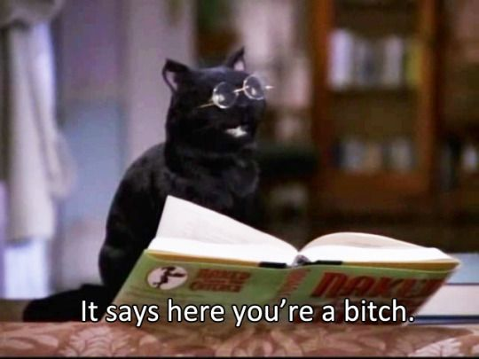

Lab 12: Advanched Block-Level Styling II
The puruse of this lab is to now experiment with sertain styling blocks such as fitting images, aligning them, and cnetering them. Along with text.
I am tired.
I will fix this later beacsue it is almost 2 am and I am very tired becasue this lab just didn't want to work. Despite me doing exactly what I did last time for the pervious lab.
Challanges
A lot of challanges for this html.
Problems
like to many other labs before, this one also had a lot of problems.
Resualts
Let's how this looks when I fix it.
Also I present my 2 moods right now, in the form of Salem the Cat.
